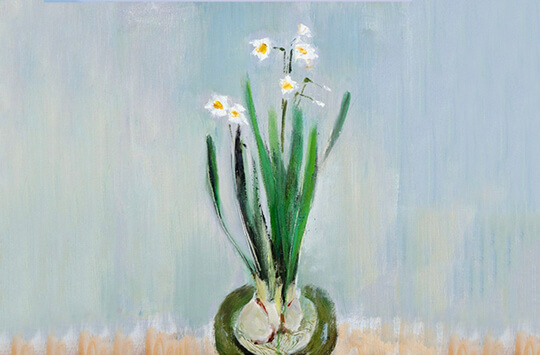

你的审美性格画像：水仙花
品位好、对自己要求高而不苛求他人。和现实大众有距离的艺术最适合你。

品位好、对自己要求高而不苛求他人。和现实大众有距离的艺术最适合你。
始终寻求自己既逃离又在场的精神故乡，却往往而不得。日系的设计能让你有此心安处是吾乡的感觉。
平庸和多数的美是你的天敌。因此始终对自己的审美有着高标准严要求。在美学训练上更是有着高度自觉，哪怕并不是自己喜欢的也会因为“有必要”而学习。
美学领域在你而言是私人领域，不喜欢和别人分享，也不热衷于说服他人接受你的审美。
那些离经叛道的表现形式让你从本能上感到排斥，有着极强的自我保护意识。
不仅美商高，而且情商也高。容易理解那些不容易被理解的艺术作品，和现实中不容易被理解的人往往也处得不错。
日本著名建筑师，其建筑融合古典与现代风格为一体。

日本知名女建筑师，作品中多带有重要的“穿透性”风格，细腻、精致而富于女性气息。
*请注意，审美性格原则上没有优劣高低，本测试旨在帮助测试者认识自己，从而能在特定场景做出更有效率的消费选择。